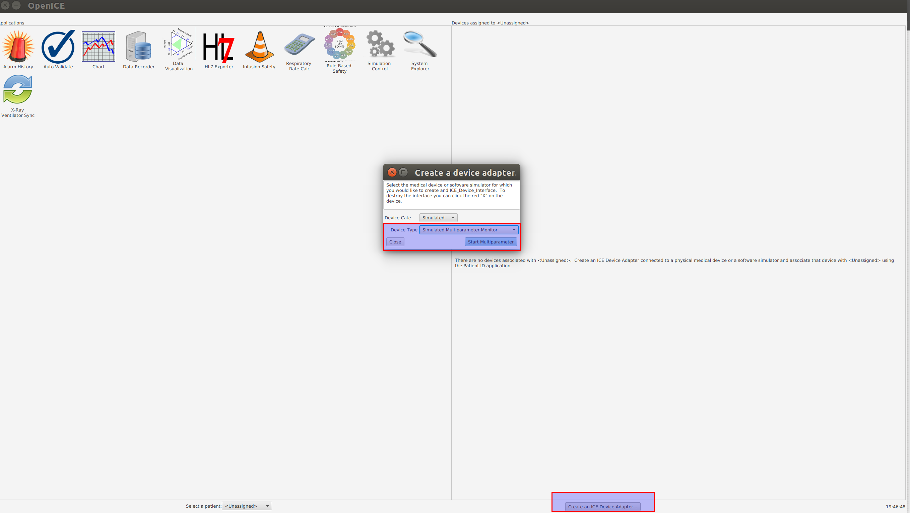

Server Setup¶
Prerequisites¶
- Python 3.5+
- JDK (either normal Oracle or OpenJDK) – if compiling OpenICE.
- JDK 1.8+ (remember to set JAVA_HOME)
- JFX (use OpenJFX on linux)
- SQLite
- Bash shell
OpenICE Startup¶
First, we have to ensure that OpenICE is running. There are two main ways to get OpenICE running:
Downloading the latest release on github. There are precompiled versions for Windows and Mac, in the form of .exe and .pkg respectively.
The latest release (0.6.3) can be downloaded here.
Compiling it from source. We have included a git submodule in our project under the openice directory. Compiling it necessary to run OpenICE on Linux.
To start OpenICE, start from the project root directory and navigate to the openice directory. Then, startup OpenICE via gradle.
cd openice ./gradlew :interop-lab:demo-apps:run
Once it’s started, the OpenICE launch window will open:

Start the supervisor.
An adapter is needed to pull information from. For demo purposes, you can use the simulated multiparameter monitor:
Once the monitor is created, you can leave it hidden, or you can double-click on it to see the simulated display:

Webserver Startup¶
Once all the prerequisites are installed (JDK and JFX optional), you need to set up and start the webserver. This is relatively simple as we bundle it into two scripts, both of which are located in the project root directory.
Setting up the webserver only has to be done the first time, to fetch python dependencies and initialize the database. You will be prompted for the username and password for the admin account, as well as the Skype account associated with the server:
./setup.sh
To start the server:
./server.sh
This will start the webserver and initialize the interface with OpenICE. It interacts on its own with an SQLite database, which stores login credentials and access schedules. A TLS certificate (fullchain.pem and privkey.pem) are required to run the server in production. To test the server locally without TLS certificates, instead run:
./server.sh --no-init